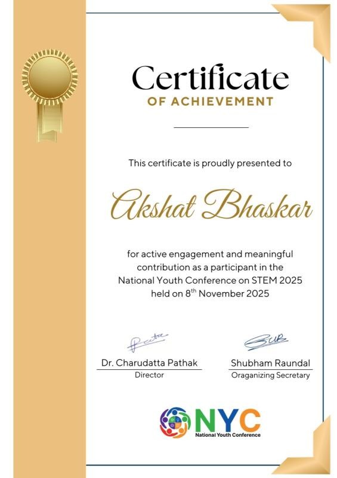

The Two Faces of Progress: A Look at the Socio-Economic Challenges and Opportunities Presented by Artificial Intelligence
IJRASET · Vol. 13, Issue 7 · July 2025
 rtificial intelligence has ceased to be a purely technical matter. In the span of a few years, it has become a political, economic, and philosophical one, reshaping how governments think about labour, security, education, and sovereignty. This research emerged from a desire to understand not just what AI is doing, but what it means: for individuals, for institutions, and for the international order.
rtificial intelligence has ceased to be a purely technical matter. In the span of a few years, it has become a political, economic, and philosophical one, reshaping how governments think about labour, security, education, and sovereignty. This research emerged from a desire to understand not just what AI is doing, but what it means: for individuals, for institutions, and for the international order.
The triggering event was the Future of Life Institute's open letter of March 2023, signed by over a thousand researchers and technologists, calling for a pause on frontier AI development. That moment crystallised the stakes. Shortly after, the Paris AI Action Summit (2025) and the formation of public AI foundations signalled that governments were beginning to treat AI governance as a serious policy domain, not merely a regulatory afterthought.
Conducted under the informal mentorship of Professor Surbhi Goel, Magerman Term Assistant Professor of Computer and Information Science at the University of Pennsylvania, this research sought to synthesise these developments into a coherent policy-analytical framework accessible to policymakers and researchers alike.
The paper's analysis organises around a central tension: that the same capabilities which make AI transformatively beneficial, speed, scale, generalisation, also make it systemically dangerous. This is not a paradox to be resolved, but a condition to be managed through governance design.
Opportunities and Challenges
opportunities
- Medical diagnostics at scale
- Automation of routine labour
- Accelerated scientific research
- Expanded access to expertise
- Economic productivity gains
challenges
- Structural job displacement
- Algorithmic bias and inequity
- Surveillance and civil liberties
- Concentration of AI power
- AGI alignment risk
A recurring finding is that existing regulatory instruments, designed for a world of slower, more legible technologies, are ill-suited to AI's pace of development. The paper thus advocates for adaptive governance: frameworks that can evolve in tandem with the technology, rather than lag behind it by years.
The AGI Question
The paper devotes particular attention to the artificial general intelligence (AGI) debate, which occupies an unusual position in policy discourse: simultaneously dismissed as speculative and treated as an urgent priority by safety researchers. The paper argues this ambiguity is itself a governance problem, it allows policymakers to defer action under the cover of scientific uncertainty.
The paper's conclusions are oriented toward practice, toward what can actually be done by governments, institutions, and the international community. Four broad recommendations emerge:
- Establish independent AI safety bodies with standing authority to audit frontier model development, modelled on the IAEA's role in nuclear governance.
- Build open and inclusive development ecosystems that distribute access to AI capabilities across geographies and institutions, not just frontier labs in a handful of countries.
- Develop international frameworks for AGI risk, analogous to arms control treaties, with verification mechanisms and agreed thresholds for pause or disclosure.
- Invest in transition support for workers and communities likely to face displacement, prioritising labour markets with the least capacity to absorb shocks.
These recommendations do not assume hostility toward AI development. They assume only that the benefits of AI are not self-distributing, and that good outcomes require deliberate institutional design.

NYC STEM Research Conference, 2025 — presenting the paper under the chairship of Dr. Deepak Singh, as the only high schooler in the room.
Read the full paper on ResearchGate, or see the journal, IJRASET.